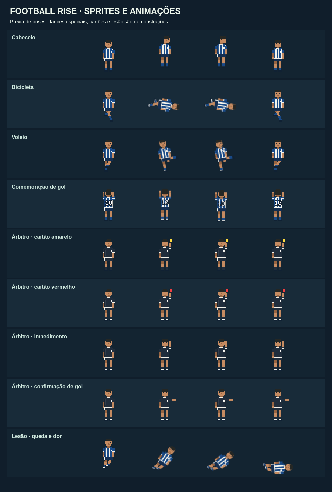
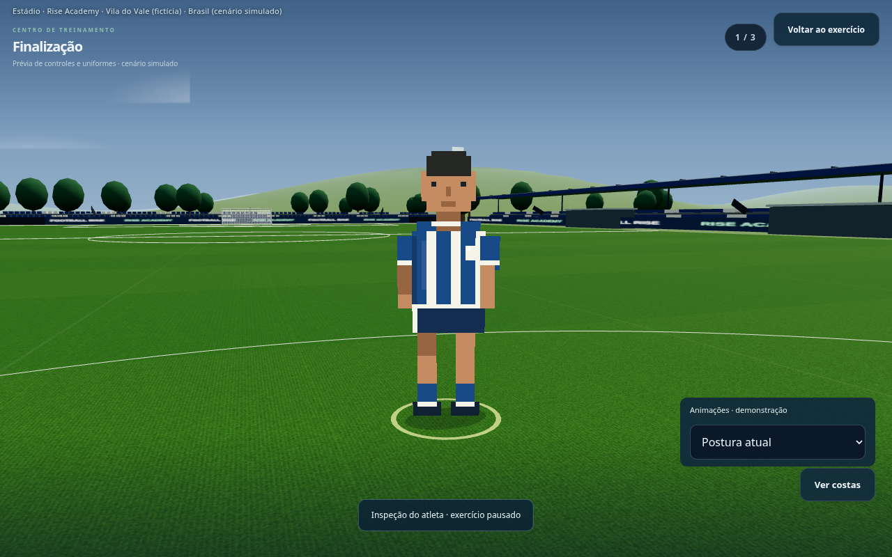
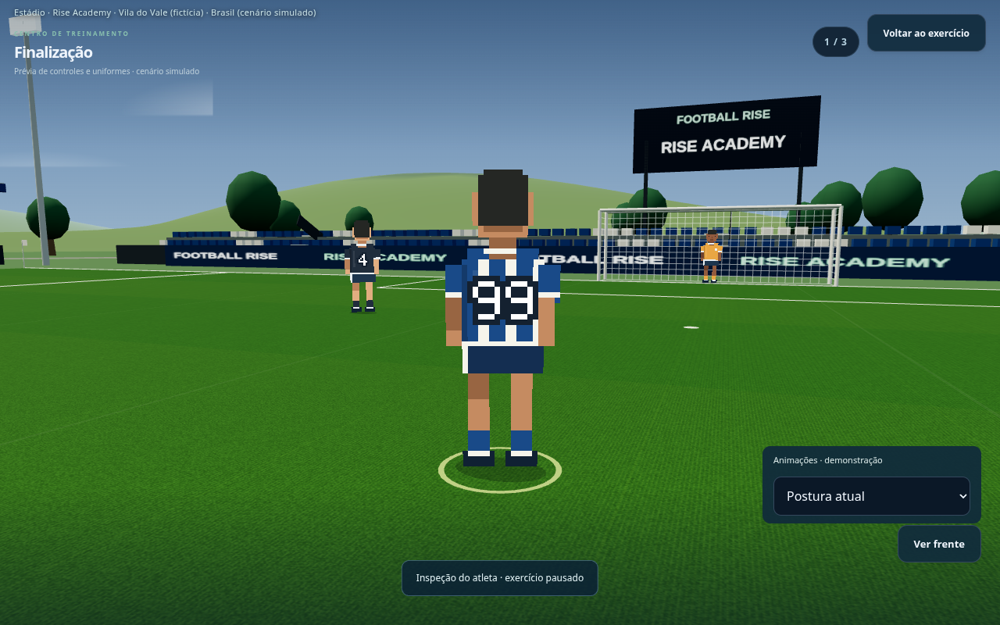
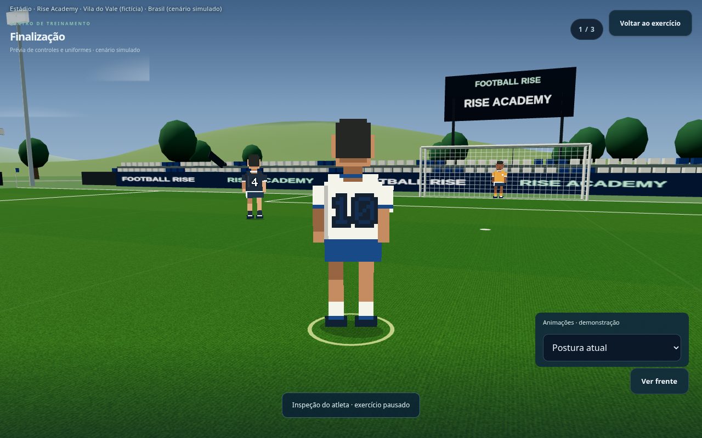
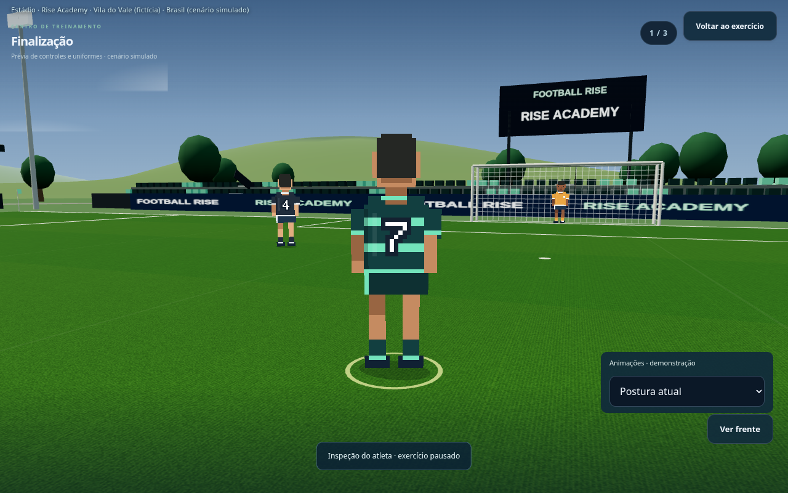
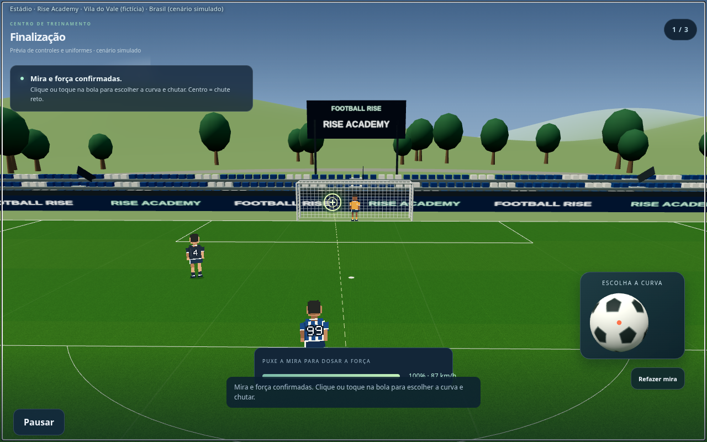
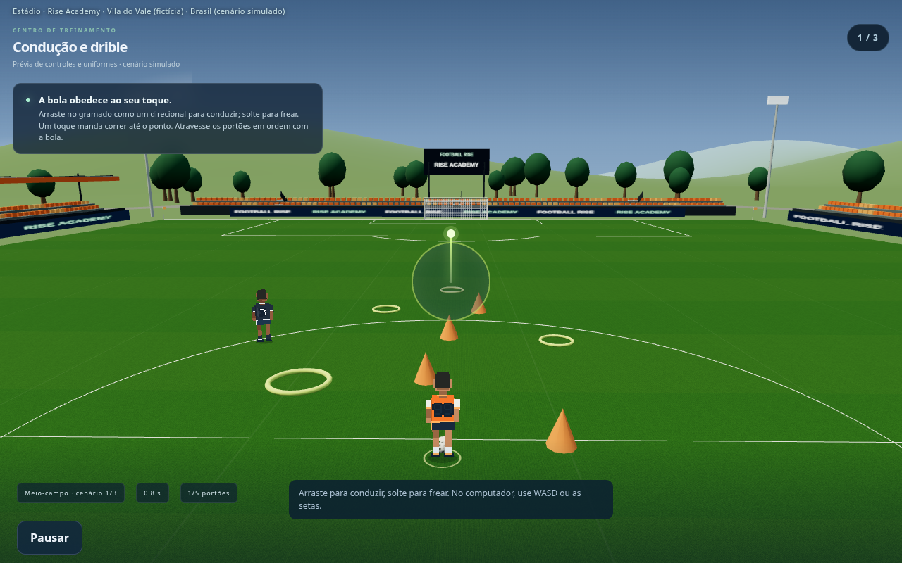
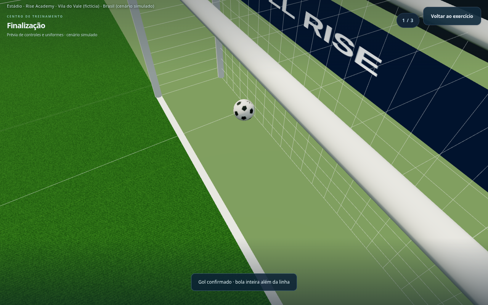

Football Rise — pixel art, controles e arbitragem
Versão em desenvolvimento. Jogo público ainda não atualizado. Lances especiais, cartões e lesão são demonstrações de animação.
Cabeceio, bicicleta, voleio, comemoração, cartões, lesão e árbitro

Novo jogador em pixel art — frente

Uniforme principal — número 99

Uniforme visitante — número 10

Uniforme alternativo — número 7

Mira e força no mesmo gesto

Condução por direcional no campo

Revisão de gol — bola inteira além da linha
